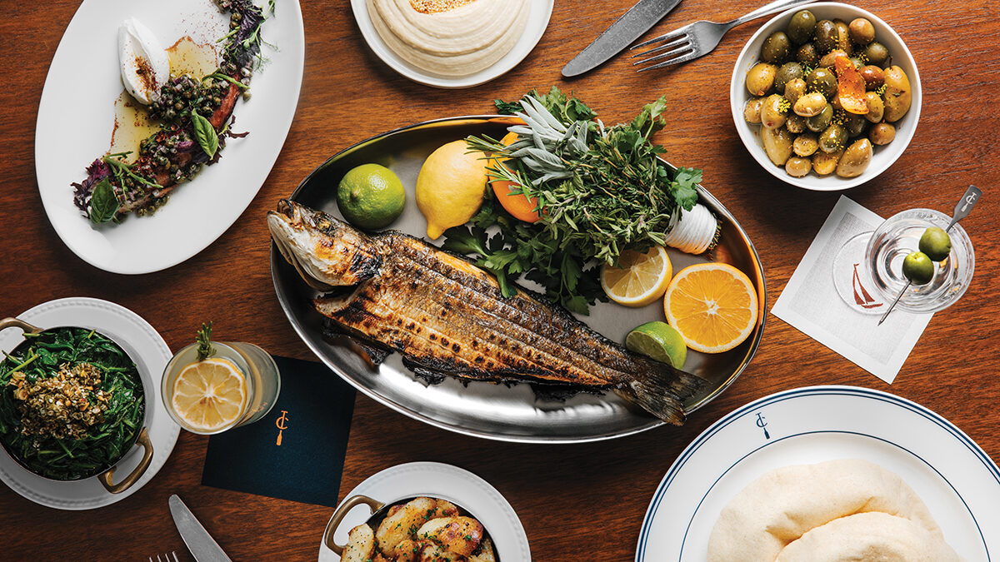
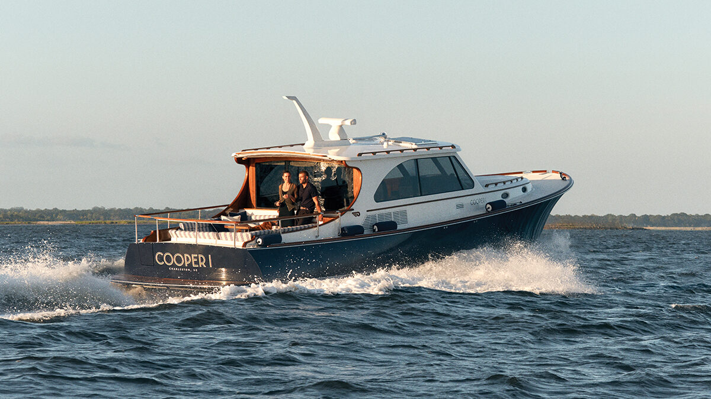

Charleston has no shortage of charming hotels tucked into its 18th-century squares, but it has never had a five-star on the waterfront. The Cooper — 191 rooms, interiors by Champalimaud Design, and the city’s first private hotel marina — has finally reoriented the Lowcountry’s best address away from King Street and towards the harbour.
The hotel occupies the former Ports Authority building on a prominent stretch of Charleston Harbor, a site most visitors only ever saw from the top deck of a departing cruise ship. Beemok Hospitality Collection, co-founded by Charleston local Ben Navarro, bought the building and the adjacent acreage years ago with the intention of turning the whole waterfront into something worth walking to. The Cooper is the first act of that plan. Union Pier, Beemok’s larger redevelopment next door, is the second.
What distinguishes the Cooper from every other grand hotel in the city is the marina. “It finally allows our community and our guests to connect with the waterfront in ways that have never been possible before,” says Lukus Grace, the property’s managing director. The fleet that sits alongside is not a token gesture: a 105-foot 1920s-era yacht, a Hinckley, two Scout boats, all available for charter with a Coast Guard-licensed crew. Charleston has discovered, belatedly and with a certain enthusiasm, that its best view of itself is from the water.
The rooms
Champalimaud Design, the New York studio responsible for Raffles Singapore and the refreshed Carlyle, has given the Cooper’s 191 rooms the feel of a well-appointed sloop. Shiplap panelling, antique brass accents and a palette of chalk, oyster and weathered linen — deliberately quiet so that the harbour, visible from almost every window, does the talking. The Presidential Suite runs to more than 1,400 square feet, opens onto a private terrace, and connects directly to the rooftop infinity pool. Rates start at $950 per night.
The bathrooms lean into the nautical brief without flirting with pastiche. Marble, not teak. Brass fittings polished to the point where they catch the light off the water. Freestanding tubs positioned for the view. The suites on the harbour side are the ones worth asking for; the view over the masts of the marina to the bridge beyond is what people will remember.
Charleston has dined, married and toasted itself on King Street for a century. The Cooper has finally given the harbour its moment.
Camille AshworthThe spa and the rooftop
The lower level houses a 7,000-square-foot spa and fitness complex that is unusually serious for a city hotel. Dedicated recovery rooms come stocked with cryo-loungers, a zero-gravity bed, compression sleeves and a red-light therapy room. A Sanarium sauna, yoga and stretch studios, and a generous pool round out a wellness offer that has clearly been planned for guests who intend to keep up their routine rather than abandon it the moment they check in. In a city better known for benne wafers and bourbon, it is a quietly radical proposition.
Upstairs, the rooftop infinity pool looks out over the harbour towards Patriots Point. The bar runs the length of one side; the loungers are angled towards the sunset. It is, predictably, where everyone ends up at six o’clock.

One of the property’s cruising vessels in the harbour. The fleet includes a 1920s yacht and a Hinckley available for charter. Photography courtesy of Robb Report
The Crossing
The hotel’s restaurant, the Crossing, is led by executive chef Nick Dugan and reads as a Mediterranean response to the Lowcountry pantry. Crudos made from hyperlocal catch rotate daily; grilled whole fish, wood-fired vegetables and a wine list heavy on southern Italian whites complete the picture. It is a departure from Charleston’s familiar vernacular of pimento cheese and shrimp and grits, and the better for it. The dining room opens directly onto the water, which helps.

The Crossing, the hotel’s Mediterranean restaurant led by chef Nick Dugan. Photography courtesy of Robb Report
The verdict
Charleston has, for better or worse, been the most consistently praised small city in American travel writing for two decades. The Cooper is the first hotel that feels built for the next twenty years rather than the last. It reframes the waterfront as the city’s front door, gives visitors a genuinely new way to experience the harbour, and does so with a design language that is restrained enough to feel local rather than imported. If you thought you knew Charleston, the Cooper is a good reason to come back.
Rates from $950 per night. 196 Concord Street, Charleston, South Carolina.